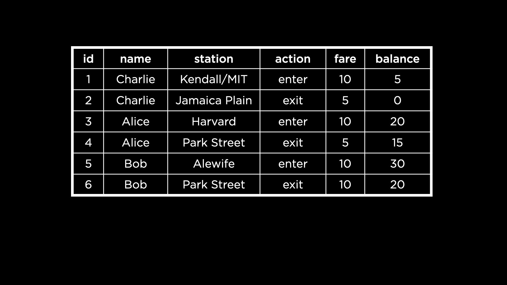
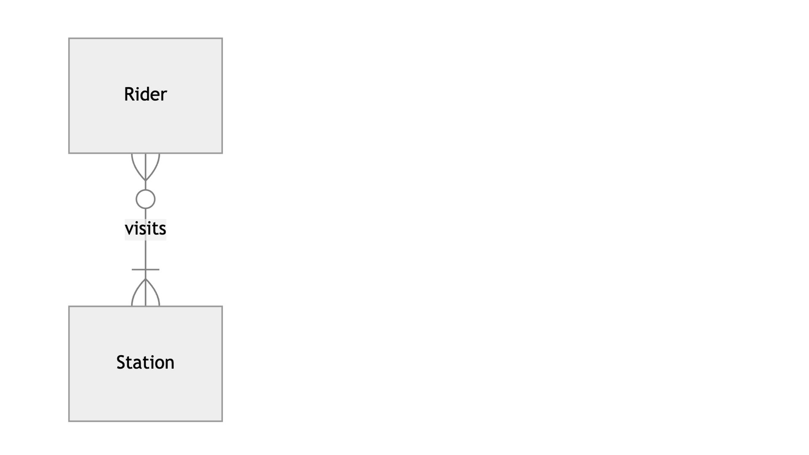
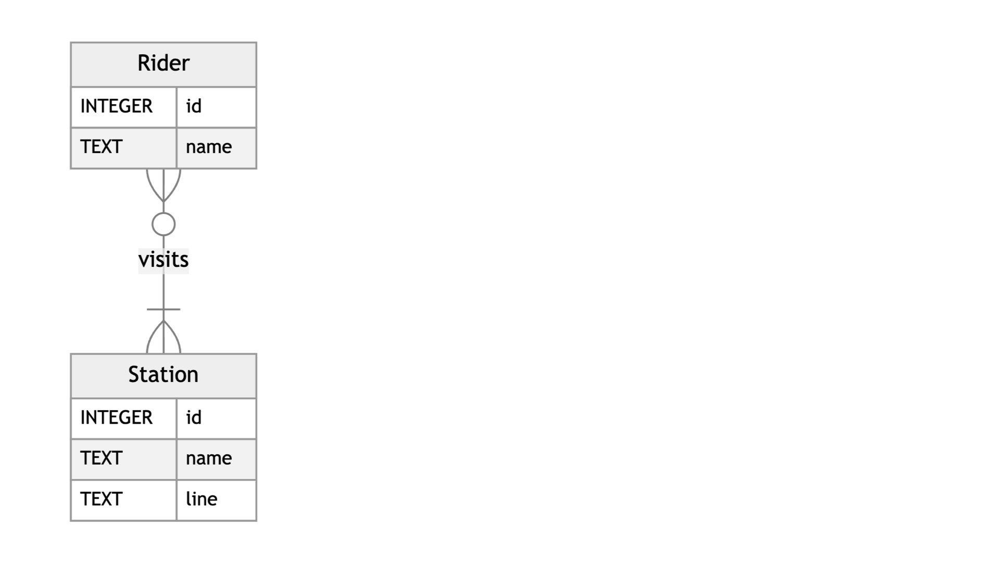

Lecture 2
- Introduction
- Creating a Database Schema
-
CREATE TABLE - Data Types and Storage Classes
- Type Affinities
- Adding Types to our Tables
- Table Constraints
- Column Constraints
- Altering Tables
- Fin
Introduction
- In this lecture, we will learn how to design our own database schemas.
- Thus far, we have primarily worked with a database of books that were longlisted for the International Booker Prize. Now, we will look underneath the hood and see what commands can be used to create such a database.
- First, let us open up the database
longlist.dbfrom Week 0 on our terminal. As a reminder, this database contained just one table, calledlonglist. To see a snapshot of the table, we can runSELECT "author", "title" FROM "longlist" LIMIT 5;This gives us the authors and titles from the first 5 rows of the table
longlist. - Here is a SQLite command (not an SQL keyword) that can shed more light on how this database was created.
.schemaOn running this, we see the SQL statement used to create the table
longlist. This shows us the columns insidelonglistand the types of data that each column is able to store. - Next, let’s open up the same database from Week 1 on our terminal. This version of
longlist.dbcontained different tables related to each other. - On running
.schemaagain, we see many commands — one for each table in the database. There is a way to see the schema for a specified table:.schema booksNow we see the statement used to create the
bookstable. We are also able to see the columns and data types for each column. For example, the"title"column takes text and the"publisher_id"column is an integer.
Creating a Database Schema
-
Now that we have seen the schema for an existing database, let us create our own! We are tasked with representing the subway system of the city of Boston through a database schema. This includes the subway stations, the different train lines, and the people who take the trains.
-
To break down the question further, we need to decide…
- what kinds of tables we will have in our Boston Subway database,
- what columns each of the tables will have, and
- what types of data we should put in each of those columns.
Normalizing
-
Observe this initial attempt at creating a table to represent Boston Subway data. This table contains subway rider names, current stations the riders are at and the action performed at the station (like entering and exiting). It also records the fares paid and balance amounts on their subway cards. This table also contains an ID for each rider “transaction”, which serves as the primary key.

- What redundancies exist in this table?
- We may choose to separate out rider names into a table of its own, to avoid having to duplicate the names so many times. We would need to give each rider an ID that can be used to relate the new table to this one.
- We may similarly choose to move subway stations to a different table and give each subway station an ID to be used as a foreign key here.
- The process of separating our data in this manner is called normalizing. When normalizing, we put each entity in its own table—as we did with riders and subway stations. Any information about a specific entity, for example a rider’s address, goes into the entity’s own table.
Relating
- We now need to decide how our entities (riders and stations) are related. A rider will likely visit multiple stations, and a subway station is likely to have more than one rider. Given this, it will be a many-to-many relationship.
-
We can also use an ER diagram to represent this relationship.

Here, we see that every rider must visit at least one station to be considered a rider. A station, though, could have no riders visiting it, because perhaps it is out of order temporarily. However, it is likely that a station has multiple riders visiting it, indicated by the crow’s foot in the ER diagram.
Questions
Does the relationship between riders and stations have to be exactly the way described here? For example, why is it okay for a station to have 0 riders?
- It is up to the person designing the database to make decisions about relationships between entities. It is possible to add a constraint that says a station must have at least one rider to be considered a station.
CREATE TABLE
- Now that we have the schema for two of the tables, let’s go ahead and create the tables.
- Let us open up a new database called
mbta.db— MBTA stands for Massachusetts Bay Transportation Authority and runs the Boston Subway. - If we run
.schema, we will see nothing because no table has been created in this database yet. - In this database, we run the following command to create the first table for riders:
CREATE TABLE riders ( "id", "name" );On running this, no results appear on the terminal. But if we run
.schemaagain, we will now see the schema for the tableriders, as defined by us! - Similarly, let us create a table for stations as well.
CREATE TABLE stations ( "id", "name", "line" );Here, we add a column
"line"to store the train line that the station is a part of. -
.schemanow shows us the schema for bothridersandstations. - Next, we will create a table to relate these two entities. These tables are often called junction tables, associative entities or join tables!
CREATE TABLE visits ( "rider_id", "station_id" );Each row of this table tells us the station visited by a particular rider.
Questions
Is it necessary to indent the lines within the
CREATE TABLEparantheses?
- No, not strictly. However, we indent the column names to adhere to style conventions as always!
Data Types and Storage Classes
- SQLite has five storage classes:
- Null: nothing, or empty value
- Integer: numbers without decimal points
- Real: decimal or floating point numbers
- Text: characters or strings
- Blob: Binary Large Object, for storing objects in binary (useful for images, audio etc.)
- A storage class can hold several data types.
-
For example, these are the data types that fall under the umbrella of the Integer storage class.
SQLite takes care of storing the input value under the right data type. In other words, we as programmers only need to choose a storage class and SQLite will do the rest!
- Consider this question: what storage class would we use to store fares? Each choice comes with affordances and limitations.
- Integers: We can store a 10 cent fare as the number 10, but that doesn’t make it very clear whether the fare is 10 cents or 10 dollars.
- Text: We can store the fare in text, like “$0.10”. However, now it will be hard to perform mathematical operations like adding up a rider’s fares.
- Real: We can store the fare using a floating point number, like 0.10, but it is not possible to store floating point numbers in binary precisely and—depending on how precise we need to be—doing so may lead to miscalculations down the line.
Type Affinities
- It is possible to specify the data type of a column while creating a table.
- However, columns in SQLite don’t always store one particular data type. They are said to have type affinities, meaning that they try to convert an input value into the type they have an affinity for.
- The five type affinities in SQLite are: Text, Numeric (either integer or real values based on what the input value best converts to), Integer, Real and Blob.
- Consider a column with a type affinity for Integers. If we try to insert “25” (the number 25 but stored as text) into this column, it will be converted into an integer data type.
- Similarly, inserting an integer 25 into a column with a type affinity for text will convert the number to its text equivalent, “25”.
Adding Types to our Tables
- To create the tables in our database again, we will first need to drop (or delete) the existing tables.
- Let’s try the following commands
DROP TABLE "riders";DROP TABLE "stations";DROP TABLE "visits";Running these statements gives no output, but
.schemashows us that the tables have now been dropped. - Next, let us create a schema file that can be run to create the tables from scratch. This is an improvement over what we previously did—typing out the
CREATE TABLEcommand for each table—because it allows us to edit and view the entire schema easily. - Create a file
schema.sql. Notice the extension.sqlthat enables syntax highlighting for SQL keywords in our editor. - Inside the file, let’s type out the schemas again, but with the affinity types this time.
CREATE TABLE riders ( "id" INTEGER, "name" TEXT ); CREATE TABLE stations ( "id" INTEGER, "name" TEXT, "line" TEXT ); CREATE TABLE visits ( "rider_id" INTEGER, "station_id" INTEGER ); -
Now, we read this file within the database to actually create the tables. Here is an updated ER Diagram with the data types included.

Questions
Previously, we were able to query the tables in our database and see the results in a table-like structure. How do we get the same kind of results to show up here?
- We haven’t yet added any data to the tables. In Lecture 3, we will see how to insert, update and delete rows in tables that we have created!
Do we have a type affinity for Boolean?
- We don’t in SQLite, but other DBMS’s might have this option. A workaround could be to use 0 or 1 integer values to represent booleans.
Table Constraints
- We can use table constraints to impose restrictions on certain values in our tables.
- For example, a primary key column must have unique values. The table constraint we use for this is
PRIMARY KEY. - Similarly, a constraint on a foreign key value is that it must be found in the primary key column of the related table! This table constraint is called, predictably,
FOREIGN KEY. -
Let’s add primary and foreign key constraints to our
schema.sqlfile.CREATE TABLE riders ( "id" INTEGER, "name" TEXT, PRIMARY KEY("id") ); CREATE TABLE stations ( "id" INTEGER, "name" TEXT, "line" TEXT, PRIMARY KEY("id") ); CREATE TABLE visits ( "rider_id" INTEGER, "station_id" INTEGER, FOREIGN KEY("rider_id") REFERENCES "riders"("id"), FOREIGN KEY("station_id") REFERENCES "stations"("id") );Notice that we created two primary key columns, the ID for both
ridersandstationsand then referenced these primary keys as foreign keys in thevisitstable. - In the
visitstable, there is no primary key. However, SQLite gives every table a primary key by default, known as the row ID. Even though the row ID is implicit, it can be queried! -
It is also possible to create a primary key composed of two columns. For example, if we wanted to give
visitsa primary key composed of both the rider and stations IDs, we could use this syntaxCREATE TABLE visits ( "rider_id" INTEGER, "station_id" INTEGER, PRIMARY KEY("rider_id", "station_id") );In this case, we probably want to allow a rider to visit a station more than once, so we would not move ahead with this approach.
Questions
Is it possible to include our own primary key for the
visitstable?
- Yes! If, for some reason, an explicit primary key was required for the
visitstable, we could create an ID column and make it the primary key.
Column Constraints
- A column constraint is a type of constraint that applies to a specified column in the table.
- SQLite has four column constraints:
-
CHECK: allows checking for a condition, like all values in the column must be greater than 0 -
DEFAULT: uses a default value if none is supplied for a row -
NOT NULL: dictates that a null or empty value cannot be inserted into the column -
UNIQUE: dictates that every value in this column must be unique
-
-
An updated schema with these contraints would look like the following:
CREATE TABLE riders ( "id" INTEGER, "name" TEXT, PRIMARY KEY("id") ); CREATE TABLE stations ( "id" INTEGER, "name" TEXT NOT NULL UNIQUE, "line" TEXT NOT NULL, PRIMARY KEY("id") ); CREATE TABLE visits ( "rider_id" INTEGER, "station_id" INTEGER, FOREIGN KEY("rider_id") REFERENCES "riders"("id"), FOREIGN KEY("station_id") REFERENCES "stations"("id") );The
NOT NULLconstraint ensures that a station name and line are specified. On the other hand, riders are not mandated to share their names, because there is no constraint applied to rider names. Similarly, each station must have a unique name, as dictated by theUNIQUEconstraint. - Primary key columns and by extension, foreign key columns must always have unique values, so there is no need to explicitly specify the
NOT NULLorUNIQUEcolumn constraints. The table constraintPRIMARY KEYincludes these column constraints.
Altering Tables
-
Consider the following updated ER diagram, where the entity “Rider” has been swapped out with a new entity “Card” used to represent CharlieCards. CharlieCards, in the Boston Subway, can be loaded with money and are used to swipe into and sometimes out of stations.
- Notice that a card can be swiped many times in total, but only at one station at a given time.
- The “Card” entity has an ID, which is also its primary key.
- There is also now an entity “Swipe”, with an ID of its own and a type. “Swipe” also records the time at which a card was swiped and the amount that was subtracted (equivalent to the amount of money needed to ride the subway)!
-
Now, to implement these changes in our database, we need to first drop the
riderstable.DROP TABLE "riders"; - Running
.schemashows us the updated schema without theriderstable. -
Next, we need a
swipestable to represent the “Swipe” entity from our updated ER diagram. We could alter thevisitstable in the following way.ALTER TABLE "visits" RENAME TO "swipes"; -
On running
.schemawe can see that the tablevisitswas renamed toswipes. However, this is not the only change needed. We also need to add some columns, like the type of swipe.ALTER TABLE "swipes" ADD COLUMN "swipetype" TEXT;Notice the type affinity
TEXTis also mentioned while adding this column. -
We also have the ability to rename a column in an
ALTER TABLEcommand. If we wanted to rename the column"swipetype"to make it less wordy, perhaps, we could try the following.ALTER TABLE "swipes" RENAME COLUMN "swipetype" TO "type"; -
Finally, we have the ability to drop (or remove) a column.
ALTER TABLE "swipes" DROP COLUMN "type";On running
.schemaagain, we can confirm that the column"type"was dropped from the table. -
It is also possible to return to the schema file
schema.sqlthat we had originally and simply make these changes there instead of altering tables. The following is an updatedschema.sql.CREATE TABLE "cards" ( "id" INTEGER, PRIMARY KEY("id") ); CREATE TABLE "stations" ( "id" INTEGER, "name" TEXT NOT NULL UNIQUE, "line" TEXT NOT NULL, PRIMARY KEY("id") ); CREATE TABLE "swipes" ( "id" INTEGER, "card_id" INTEGER, "station_id" INTEGER, "type" TEXT NOT NULL CHECK("type" IN ('enter', 'exit', 'deposit')), "datetime" NUMERIC NOT NULL DEFAULT CURRENT_TIMESTAMP, "amount" NUMERIC NOT NULL CHECK("amount" != 0), PRIMARY KEY("id"), FOREIGN KEY("station_id") REFERENCES "stations"("id"), FOREIGN KEY("card_id") REFERENCES "cards"("id") ); - Let us take a couple of minutes to read through the updated schema and make a note of the things that seem to have changed!
- The tables
cardsandswipesare added and theNOT NULLcolumn constraint is used to require some values inswipes. - The
"datetime"column is given the type affinity numeric — this is because numeric types can store and display date values. - The foreign key mapping is adjusted as needed, such that
"card_id"is a foreign key referring to the ID of thecardstable. - A default value is assigned to the
"datetime"column so that it automatically picks up the current timestamp if none is supplied. Notice the use of theCURRENT_TIMESTAMP— it returns the year, month, day, hour, minute and second combined into one value. - There is a check in place to ensure the amount on a swipe is not 0. This is implemented through the column constraint
CHECK, which is used with an expression"amount" != 0to ensure the value is not 0. - Similarly, there is a check on
"type"to ensure its value is one of ‘enter’, ‘exit’ and ‘deposit’. This is done because when a CharlieCard is swiped, it is usually for one of these three purposes, so it makes sense to have"type"assume these values only. Notice the use of theINkeyword to carry out this check! Is there a way to implement this check using theORoperator instead?
- The tables
Questions
On trying to drop the table
riders, an error comes up because we’re using the ID ofridersas a foreign key. How can the table be dropped in this case?
- Foreign key constraints within the database are checked when dropping a table. Before dropping
riders, we would need to first drop the foreign key column"rider_id".
How different is the syntax for a different DBMS like MySQL or PostgreSQL?
- Most of the SQLite syntax definitely applies to other database management systems as well. However, if we tried porting our SQLite code, some minimal changes would be needed.
If we don’t specify a type affinity of a column in SQLite, what happens?
- The default type affinity is numeric, so the column would get assigned the numeric type affinity.
Fin
- This brings us to the conclusion of Lecture 2 about Designing in SQL! For an interesting story about the origin of the name CharlieCard, read this article from Celebrate Boston.